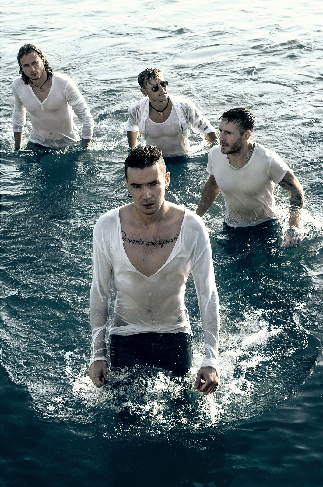
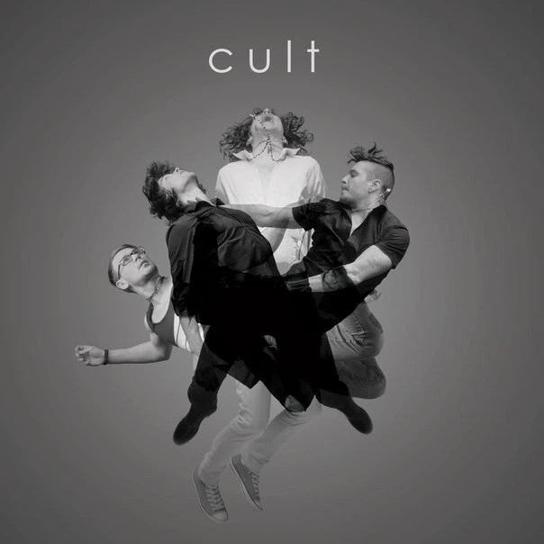

Epolets
Український рок-гурт з Одеси


Epolets — один із найяскравіших та найенергійніших гуртів сучасної української альтернативної сцени. Поєднуючи у своїй музиці драйв альтернативного року, мелодійність інді та танцювальні поп-ритми, гурт завоював репутацію справжніх «фестивальних монстрів» завдяки своїм вибуховим живим виступам.
⚓️ Початок шляху та народження Epolets (2011–2012)
Історія колективу розпочалася в Одесі. У 2011 році
вокаліст Павло Варениця та гітарист Андрій Касецький
створили кавер-проєкт під назвою The Rolling Bones.
Музиканти грали хіти відомих рок-гуртів, але швидко
зрозуміли, що готові створювати власний унікальний матеріал.
Офіційним днем народження гурту Epolets вважається
14 лютого 2011 року. Назва виникла випадково: музиканти
шукали слово, пов'язане з морською тематикою Одеси,
але водночас романтичне та рок-н-рольне.
Вже у 2012 році світ побачив їхній дебютний мініальбом
Bravery, а згодом і однойменну повноформатну
платівку Epolets (2013).
📈 Сходження та «Х-Фактор» (2014–2016)
Гурт почав активно гастролювати та випускати новий
матеріал. Другий альбом Cult (2014) закріпив
за ними статус перспективних новачків, а їхні треки
потрапили в ротацію провідних рок-радіостанцій.
Справжнім проривом для широкої аудиторії стала участь
Epolets у 6-му сезоні шоу «Х-Фактор» (2015).
Під керівництвом Андрія Хливнюка колектив дійшов
до фіналу.
У 2016 році гурт випустив третій альбом
Dogma, який вирізнявся більш зрілим
та важким звучанням.
🌊 Еволюція звучання та експерименти (2017–2021)
Epolets ніколи не боялися експериментувати. У 2017 році
вони випустили повністю україномовний альбом
«Діти моря», продюсером якого виступив клавішник
гурту «Океан Ельзи» Мілош Єліч.
Платівка вийшла дуже атмосферною, поєднавши фірмову
гітарну енергетику з морською меланхолією.
Цей період відзначився сотнями концертів. Гурт став
постійним хедлайнером найбільших українських фестивалів:
Atlas Weekend, Файне Місто, Zaxidfest, Respublica.
⚡️ Нова реальність та «Гармонія хаосу» (2022–дотепер)
З початком повномасштабного вторгнення у 2022 році
життя та творчість гурту, як і всієї країни,
трансформувалися.
Музиканти активно включилися у волонтерську діяльність,
даючи благодійні концерти в Україні та за кордоном
для збору коштів на підтримку ЗСУ.
У цей складний період народилися сильні, рефлексивні
треки, такі як «Крик», «Палай» та
хітовий сингл «Краш».
Весь накопичений досвід і емоції вилилися в новий
концептуальний альбом «Гармонія хаосу».
Цей реліз став відображенням внутрішньої боротьби,
стійкості та надії.
Сьогодні Epolets продовжують залишатися рушійною силою
української рок-музики, регулярно радуючи фанів новими
релізами, потужними відеокліпами та живими виступами,
які заряджають вірою в перемогу.
Софія Стрижак :-)